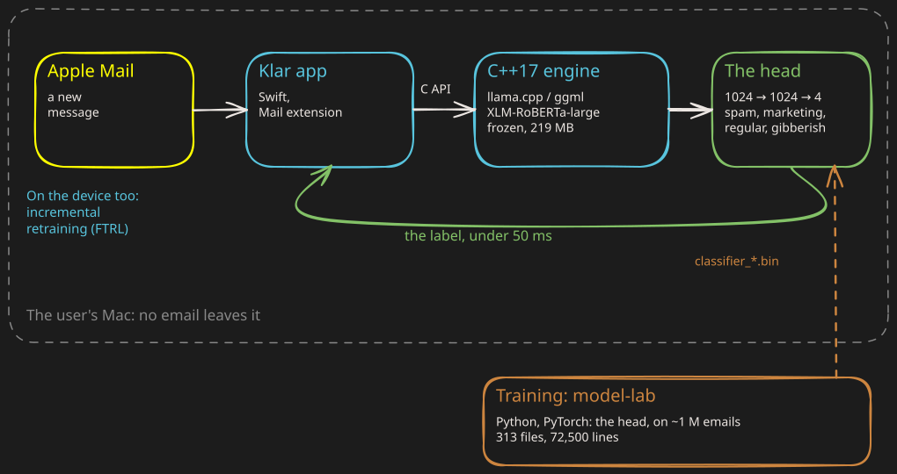

An AI spam filter that never leaves the Mac.
Klar, live on the App Store. The problem, what I built, the result.
The problem: filter spam with a real language model, without a single email going to a server.
1The diagram

what the user seesthe engine, on the Macthe modeltraining
2What I built
-
The model: a classifier head trained in Python (PyTorch) on a frozen XLM-RoBERTa-large encoder.
- 550M parameters, quantised to q4_k_m: 219 MB.
- Four labels: spam, marketing, regular, gibberish.
- A private dataset of about 1 million emails.
-
The engine: C++17 on llama.cpp and ggml.
- 24,000 lines, brand tables generated from lists included.
- Two C APIs (30 and 11 functions), Swift and Node bindings.
- Retraining on the device, of two models: FTRL, and the head on the BERT model (XLM-RoBERTa), held close to its shipped weights so it does not forget.
-
The app: Swift, an Apple Mail extension.
-
The lab:
model-lab, training and evaluation.- 313 Python files, 72,500 lines, 49 test files.
- NumPy and scikit-learn day to day.
3The result
-
Under 50 ms per message, on the user's Mac.
-
Live on the App Store, about a hundred users.
4My role
-
Alone, end to end: the model, the engine, the app, the App Store release.
- The infrastructure too: OpenTofu on Scaleway, blue-green deploys.
-
And beyond the code: the product, the data and the business.
- The product and the market analysis; the design system of the app and the site.
- Collecting and cleaning the emails the model was trained on.
- Prospecting, and finding commercial partners.